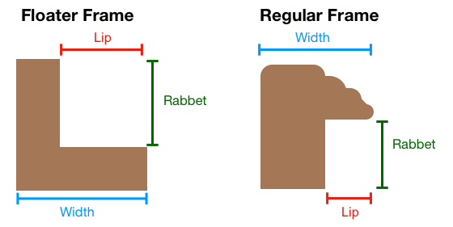
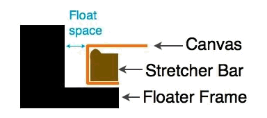
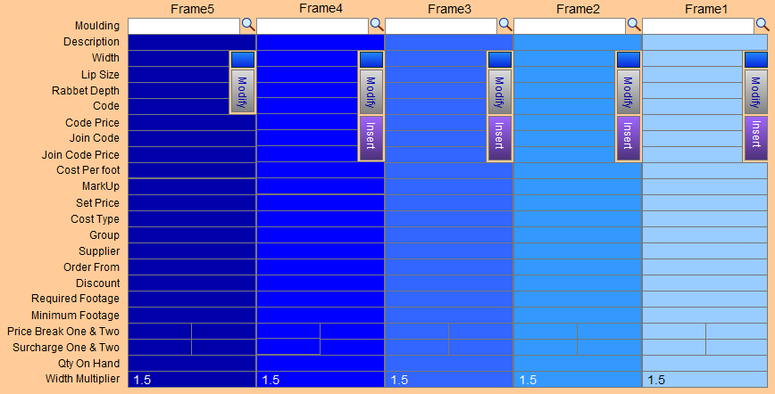

Add a Floater Frame and Floater Space
Floater Frames, and the space between the frame and the stretcher, are entered onto a Work Order the same as any other frame.
Before You Begin...

Floater frames are very popular now but there are two different ways to enter them into a Work Order. The method you use may depend on the information the supplier has provided. Is the width provided the top visible portion of the frame, or is it the base width of the frame, as shown in the above diagram?
Note: Some suppliers will truncate the word 'floater' in the Description field. Perform a Find for 'fltr' in the description field AND Fillet in the Group field to locate any Floater frames that may be identified as a Fillet instead of a Wood.

The gap between the edges of the canvas and the inside edge of the frame is called the float size or float space. The float size is determined by how much of the canvas you wish to see.
Reasons for Small Float Space
-
Staples showing on side of canvas
-
Sides of canvas left blank
-
Sides of canvas sloppily painted
Reasons for Large Float Space
-
The canvas is out of square or the image wraps around onto sides
Tip: To determine if the canvas is out of square measure diagonally from the top left to the bottom right and diagonally from the top right to the bottom left.
If it is perfectly square, then those two measurement will be the same. Depending how different they are, you may need to increase the size of the float.
For Correct Entry of a Floater Frame
Both of the following points are very important! They ensure that the measurements are accurate.
The Width is the Sight-size
-
If the width of the moulding is just the visual portion (as when viewed from above) and not the full width of the bottom of the frame, then enter a lip size of 0 (zero) since floater frames do not have a frame lip protruding over a portion of the art.
The Width is the Full Width
-
If the width is the full width of the floater frame, then do not use a zero lip size.
-
Enter the difference between the full width and the amount of float space you desire. For example, for a full width of 2" and a desired float space of 3/8" you should enter a lip size of 1 5/8.
-
Then, in the White Space fields (in the Measurements tab), enter the float space of 3/8.
Two different scenarios for entering Floater Frames
1. The Art is already on a Stretcher
-
Since there is no need to price the stretcher on the Work Order, simply enter your chosen floater frame moulding in the Frame1 field.
-
Then, in the White Space fields (in the Measurements tab), enter the space between the art-on-a-stretcher and the floater frame.
2. The Art needs a Stretcher Built
-
Since you need to enter the stretcher, the floater frame and the space between them, use the stacked frame icon to open the Layered Frames details window (where you can layer up to 5 frames).
-
The trick is to enter a "Space" item into the Frame2 field as a moulding item; this special item has a Lip Size of 0 (zero). The stretcher goes into Frame 1 and the floater frame goes into Frame 3.
How to enter a Floater Frame and Floater Space on a Work Order
First, create a Moulding item for the "Floater Space"
Tip: This only needs to be done once.
-
Make sure that the width entered on the moulding record of the floater frame is just the visual portion when viewed from the top -- not the full width of the bottom of the frame.
-
Enter the Lip Size as 0 (zero) since floater frames do not have a frame lip protruding over a portion of the art.
-
Both of these points are very important! They ensure that the measurements will be accurate.
-
From the Main Menu, in the Price Codes section, click the New Price Code Item button.
-
The Add a new Price Code item dialog box appears.

-
Choose Wood.
-
In the Item field, enter Space or another unique name.
-
In the Description field enter, Floater Space .
-
Enter 0 (zero) in the Lip Size field.
The above step is very important! It ensures that the measurements remain accurate.
-
Enter an amount in the Width field.
Later, when preparing a Work Order, you can change the amount of space needed between the art and the floater frame. -
In the Supplier field enter In House .
This prevents the item from appearing on any of your Frame Orders or Purchase Orders.
Now that the item is created, it can be used in any future Work Order (without having to create it again).
Second, enter the Floater Frame and Space onto a Work Order
-
In a Work Order, click the Stacked Frames icon.

-
The Stacked Frames Details window appears.

-
We are assuming that you are pricing and building the stretcher and that the art is not already on a stretcher.
In the Frame1 column, in the Moulding field, enter the stretcher's moulding number. -
To maintain the size of the art, make sure the Group is set to Extender
The outside measurements adjust to accurately reflect the size of the art. -
In the Frame2 column, in the Moulding field, enter the “Floater Space” item you just created above.
-
Click in the Width field and enter the amount of desired space or air between the art and the Floater Frame.
-
Lastly, in the Frame3 column, in Moulding field, enter the floater frame item number.
-
Click the Done button to return to the Work Order.
Note: If you use the Modify button to change any values, then the changes affect this Work Order and all subsequent uses of the same item. For example, if you change the stretcher group to Extender for an item, then it will be accurate every time you use it.
© 2023 Adatasol, Inc.